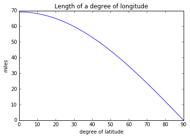

Spatial Data Processing with PySAL & Pandas
#by convention, we use these shorter two-letter names
import pysal as ps
import pandas as pd
import numpy as np
PySAL has two simple ways to read in data. But, first, you need to get the path from where your notebook is running on your computer to the place the data is. For example, to find where the notebook is running:
!pwd # on windows !cd
/Users/dani/code/gds_scipy16/content/part1
PySAL has a command that it uses to get the paths of its example datasets. Let's work with a commonly-used dataset first.
ps.examples.available()
['10740',
'arcgis',
'baltim',
'book',
'burkitt',
'calemp',
'chicago',
'columbus',
'desmith',
'geodanet',
'juvenile',
'Line',
'mexico',
'nat',
'networks',
'newHaven',
'Point',
'Polygon',
'sacramento2',
'sids2',
'snow_maps',
'south',
'stl',
'street_net_pts',
'taz',
'us_income',
'virginia',
'wmat']
ps.examples.explain('us_income')
{'description': 'Per-capita income for the lower 47 US states 1929-2010',
'explanation': [' * us48.shp: shapefile ',
' * us48.dbf: dbf for shapefile',
' * us48.shx: index for shapefile',
' * usjoin.csv: attribute data (comma delimited file)'],
'name': 'us_income'}
csv_path = ps.examples.get_path('usjoin.csv')
f = ps.open(csv_path)
f.header[0:10]
['Name',
'STATE_FIPS',
'1929',
'1930',
'1931',
'1932',
'1933',
'1934',
'1935',
'1936']
y2009 = f.by_col('2009')
y2009[0:10]
[32274, 32077, 31493, 40902, 40093, 52736, 40135, 36565, 33086, 30987]
Working with shapefiles
We can also work with local files outside the built-in examples.
To read in a shapefile, we will need the path to the file.
shp_path = '../data/texas.shp'
print(shp_path)
../data/texas.shp
Then, we open the file using the ps.open command:
f = ps.open(shp_path)
f is what we call a "file handle." That means that it only points to the data and provides ways to work with it. By itself, it does not read the whole dataset into memory. To see basic information about the file, we can use a few different methods.
For instance, the header of the file, which contains most of the metadata about the file:
f.header
{'BBOX Mmax': 0.0,
'BBOX Mmin': 0.0,
'BBOX Xmax': -93.50721740722656,
'BBOX Xmin': -106.6495132446289,
'BBOX Ymax': 36.49387741088867,
'BBOX Ymin': 25.845197677612305,
'BBOX Zmax': 0.0,
'BBOX Zmin': 0.0,
'File Code': 9994,
'File Length': 49902,
'Shape Type': 5,
'Unused0': 0,
'Unused1': 0,
'Unused2': 0,
'Unused3': 0,
'Unused4': 0,
'Version': 1000}
To actually read in the shapes from memory, you can use the following commands:
f.by_row(14) #gets the 14th shape from the file
<pysal.cg.shapes.Polygon at 0x10d8baa20>
all_polygons = f.read() #reads in all polygons from memory
len(all_polygons)
254
So, all 254 polygons have been read in from file. These are stored in PySAL shape objects, which can be used by PySAL and can be converted to other Python shape objects.
They typically have a few methods. So, since we've read in polygonal data, we can get some properties about the polygons. Let's just have a look at the first polygon:
all_polygons[0:5]
[<pysal.cg.shapes.Polygon at 0x10d8baba8>,
<pysal.cg.shapes.Polygon at 0x10d8ba908>,
<pysal.cg.shapes.Polygon at 0x10d8ba860>,
<pysal.cg.shapes.Polygon at 0x10d8ba8d0>,
<pysal.cg.shapes.Polygon at 0x10d8baa90>]
all_polygons[0].centroid #the centroid of the first polygon
(-100.27156110567945, 36.27508640938005)
all_polygons[0].area
0.23682222998468205
all_polygons[0].perimeter
1.9582821721538344
While in the Jupyter Notebook, you can examine what properties an object has by using the tab key.
polygon = all_polygons[0]
polygon. #press tab when the cursor is right after the dot
File "<ipython-input-20-aa03438a2fa8>", line 1
polygon. #press tab when the cursor is right after the dot
^
SyntaxError: invalid syntax
Working with Data Tables
dbf_path = "../data/texas.dbf"
print(dbf_path)
../data/texas.dbf
When you're working with tables of data, like a csv or dbf, you can extract your data in the following way. Let's open the dbf file we got the path for above.
f = ps.open(dbf_path)
Just like with the shapefile, we can examine the header of the dbf file.
f.header
['NAME',
'STATE_NAME',
'STATE_FIPS',
'CNTY_FIPS',
'FIPS',
'STFIPS',
'COFIPS',
'FIPSNO',
'SOUTH',
'HR60',
'HR70',
'HR80',
'HR90',
'HC60',
'HC70',
'HC80',
'HC90',
'PO60',
'PO70',
'PO80',
'PO90',
'RD60',
'RD70',
'RD80',
'RD90',
'PS60',
'PS70',
'PS80',
'PS90',
'UE60',
'UE70',
'UE80',
'UE90',
'DV60',
'DV70',
'DV80',
'DV90',
'MA60',
'MA70',
'MA80',
'MA90',
'POL60',
'POL70',
'POL80',
'POL90',
'DNL60',
'DNL70',
'DNL80',
'DNL90',
'MFIL59',
'MFIL69',
'MFIL79',
'MFIL89',
'FP59',
'FP69',
'FP79',
'FP89',
'BLK60',
'BLK70',
'BLK80',
'BLK90',
'GI59',
'GI69',
'GI79',
'GI89',
'FH60',
'FH70',
'FH80',
'FH90']
So, the header is a list containing the names of all of the fields we can read.
If we just wanted to grab the data of interest, HR90, we can use either by_col or by_col_array, depending on the format we want the resulting data in:
HR90 = f.by_col('HR90')
print(type(HR90).__name__, HR90[0:5])
HR90 = f.by_col_array('HR90')
print(type(HR90).__name__, HR90[0:5])
list [0.0, 0.0, 18.31166453, 0.0, 3.6517674554]
ndarray [[ 0. ]
[ 0. ]
[ 18.31166453]
[ 0. ]
[ 3.65176746]]
As you can see, the by_col function returns a list of data, with no shape. It can only return one column at a time:
HRs = f.by_col('HR90', 'HR80')
---------------------------------------------------------------------------
TypeError Traceback (most recent call last)
<ipython-input-25-1fef6a3c3a50> in <module>()
----> 1 HRs = f.by_col('HR90', 'HR80')
TypeError: __call__() takes 2 positional arguments but 3 were given
This error message is called a "traceback," as you see in the top right, and it usually provides feedback on why the previous command did not execute correctly. Here, you see that one-too-many arguments was provided to __call__, which tells us we cannot pass as many arguments as we did to by_col.
If you want to read in many columns at once and store them to an array, use by_col_array:
HRs = f.by_col_array('HR90', 'HR80')
HRs[0:10]
array([[ 0. , 0. ],
[ 0. , 10.50199538],
[ 18.31166453, 5.10386362],
[ 0. , 0. ],
[ 3.65176746, 10.4297038 ],
[ 0. , 0. ],
[ 0. , 18.85369532],
[ 2.59514448, 6.33617194],
[ 0. , 0. ],
[ 5.59753708, 6.0331825 ]])
It is best to use by_col_array on data of a single type. That is, if you read in a lot of columns, some of them numbers and some of them strings, all columns will get converted to the same datatype:
allcolumns = f.by_col_array(['NAME', 'STATE_NAME', 'HR90', 'HR80'])
allcolumns
array([['Lipscomb', 'Texas', '0.0', '0.0'],
['Sherman', 'Texas', '0.0', '10.501995379'],
['Dallam', 'Texas', '18.31166453', '5.1038636248'],
...,
['Hidalgo', 'Texas', '7.3003167816', '8.2383277607'],
['Willacy', 'Texas', '5.6481219994', '7.6212251119'],
['Cameron', 'Texas', '12.302014455', '11.761321464']],
dtype='<U13')
Note that the numerical columns, HR90 & HR80 are now considered strings, since they show up with the single tickmarks around them, like '0.0'.
These methods work similarly for .csv files as well.
Using Pandas with PySAL
A new functionality added to PySAL recently allows you to work with shapefile/dbf pairs using Pandas. This optional extension is only turned on if you have Pandas installed. The extension is the ps.pdio module:
ps.pdio
<module 'pysal.contrib.pdutilities' from '/Users/dani/anaconda/envs/gds-scipy16/lib/python3.5/site-packages/pysal/contrib/pdutilities/__init__.py'>
To use it, you can read in shapefile/dbf pairs using the ps.pdio.read_files command.
shp_path = ps.examples.get_path('NAT.shp')
data_table = ps.pdio.read_files(shp_path)
This reads in the entire database table and adds a column to the end, called geometry, that stores the geometries read in from the shapefile.
Now, you can work with it like a standard pandas dataframe.
data_table.head()
| NAME | STATE_NAME | STATE_FIPS | CNTY_FIPS | FIPS | STFIPS | COFIPS | FIPSNO | SOUTH | HR60 | ... | BLK90 | GI59 | GI69 | GI79 | GI89 | FH60 | FH70 | FH80 | FH90 | geometry | |
|---|---|---|---|---|---|---|---|---|---|---|---|---|---|---|---|---|---|---|---|---|---|
| 0 | Lake of the Woods | Minnesota | 27 | 077 | 27077 | 27 | 77 | 27077 | 0 | 0.000000 | ... | 0.024534 | 0.285235 | 0.372336 | 0.342104 | 0.336455 | 11.279621 | 5.4 | 5.663881 | 9.515860 | <pysal.cg.shapes.Polygon object at 0x104125ef0> |
| 1 | Ferry | Washington | 53 | 019 | 53019 | 53 | 19 | 53019 | 0 | 0.000000 | ... | 0.317712 | 0.256158 | 0.360665 | 0.361928 | 0.360640 | 10.053476 | 2.6 | 10.079576 | 11.397059 | <pysal.cg.shapes.Polygon object at 0x10d8ba390> |
| 2 | Stevens | Washington | 53 | 065 | 53065 | 53 | 65 | 53065 | 0 | 1.863863 | ... | 0.210030 | 0.283999 | 0.394083 | 0.357566 | 0.369942 | 9.258437 | 5.6 | 6.812127 | 10.352015 | <pysal.cg.shapes.Polygon object at 0x104142400> |
| 3 | Okanogan | Washington | 53 | 047 | 53047 | 53 | 47 | 53047 | 0 | 2.612330 | ... | 0.155922 | 0.258540 | 0.371218 | 0.381240 | 0.394519 | 9.039900 | 8.1 | 10.084926 | 12.840340 | <pysal.cg.shapes.Polygon object at 0x10dadd5c0> |
| 4 | Pend Oreille | Washington | 53 | 051 | 53051 | 53 | 51 | 53051 | 0 | 0.000000 | ... | 0.134605 | 0.243263 | 0.365614 | 0.358706 | 0.387848 | 8.243930 | 4.1 | 7.557643 | 10.313002 | <pysal.cg.shapes.Polygon object at 0x10dadd630> |
5 rows × 70 columns
The read_files function only works on shapefile/dbf pairs. If you need to read in data using CSVs, use pandas directly:
usjoin = pd.read_csv(csv_path)
#usjoin = ps.pdio.read_files(csv_path) #will not work, not a shp/dbf pair
usjoin.head()
| Name | STATE_FIPS | 1929 | 1930 | 1931 | 1932 | 1933 | 1934 | 1935 | 1936 | ... | 2000 | 2001 | 2002 | 2003 | 2004 | 2005 | 2006 | 2007 | 2008 | 2009 | |
|---|---|---|---|---|---|---|---|---|---|---|---|---|---|---|---|---|---|---|---|---|---|
| 0 | Alabama | 1 | 323 | 267 | 224 | 162 | 166 | 211 | 217 | 251 | ... | 23471 | 24467 | 25161 | 26065 | 27665 | 29097 | 30634 | 31988 | 32819 | 32274 |
| 1 | Arizona | 4 | 600 | 520 | 429 | 321 | 308 | 362 | 416 | 462 | ... | 25578 | 26232 | 26469 | 27106 | 28753 | 30671 | 32552 | 33470 | 33445 | 32077 |
| 2 | Arkansas | 5 | 310 | 228 | 215 | 157 | 157 | 187 | 207 | 247 | ... | 22257 | 23532 | 23929 | 25074 | 26465 | 27512 | 29041 | 31070 | 31800 | 31493 |
| 3 | California | 6 | 991 | 887 | 749 | 580 | 546 | 603 | 660 | 771 | ... | 32275 | 32750 | 32900 | 33801 | 35663 | 37463 | 40169 | 41943 | 42377 | 40902 |
| 4 | Colorado | 8 | 634 | 578 | 471 | 354 | 353 | 368 | 444 | 542 | ... | 32949 | 34228 | 33963 | 34092 | 35543 | 37388 | 39662 | 41165 | 41719 | 40093 |
5 rows × 83 columns
The nice thing about working with pandas dataframes is that they have very powerful baked-in support for relational-style queries. By this, I mean that it is very easy to find things like:
The number of counties in each state:
data_table.groupby("STATE_NAME").size()
STATE_NAME
Alabama 67
Arizona 14
Arkansas 75
California 58
Colorado 63
Connecticut 8
Delaware 3
District of Columbia 1
Florida 67
Georgia 159
Idaho 44
Illinois 102
Indiana 92
Iowa 99
Kansas 105
Kentucky 120
Louisiana 64
Maine 16
Maryland 24
Massachusetts 12
Michigan 83
Minnesota 87
Mississippi 82
Missouri 115
Montana 55
Nebraska 93
Nevada 17
New Hampshire 10
New Jersey 21
New Mexico 32
New York 58
North Carolina 100
North Dakota 53
Ohio 88
Oklahoma 77
Oregon 36
Pennsylvania 67
Rhode Island 5
South Carolina 46
South Dakota 66
Tennessee 95
Texas 254
Utah 29
Vermont 14
Virginia 123
Washington 38
West Virginia 55
Wisconsin 70
Wyoming 23
dtype: int64
Or, to get the rows of the table that are in Arizona, we can use the query function of the dataframe:
data_table.query('STATE_NAME == "Arizona"')
| NAME | STATE_NAME | STATE_FIPS | CNTY_FIPS | FIPS | STFIPS | COFIPS | FIPSNO | SOUTH | HR60 | ... | BLK90 | GI59 | GI69 | GI79 | GI89 | FH60 | FH70 | FH80 | FH90 | geometry | |
|---|---|---|---|---|---|---|---|---|---|---|---|---|---|---|---|---|---|---|---|---|---|
| 1707 | Navajo | Arizona | 04 | 017 | 04017 | 4 | 17 | 4017 | 0 | 5.263989 | ... | 0.905251 | 0.366863 | 0.414135 | 0.401999 | 0.445299 | 13.146998 | 12.1 | 13.762783 | 18.033782 | <pysal.cg.shapes.Polygon object at 0x10e280080> |
| 1708 | Coconino | Arizona | 04 | 005 | 04005 | 4 | 5 | 4005 | 0 | 3.185449 | ... | 1.469081 | 0.301222 | 0.377785 | 0.381655 | 0.403188 | 9.475171 | 8.5 | 11.181563 | 15.267643 | <pysal.cg.shapes.Polygon object at 0x10e2800f0> |
| 1722 | Mohave | Arizona | 04 | 015 | 04015 | 4 | 15 | 4015 | 0 | 0.000000 | ... | 0.324075 | 0.279339 | 0.347150 | 0.375790 | 0.374383 | 11.508554 | 4.8 | 7.018268 | 9.214294 | <pysal.cg.shapes.Polygon object at 0x10e280710> |
| 1726 | Apache | Arizona | 04 | 001 | 04001 | 4 | 1 | 4001 | 0 | 10.951223 | ... | 0.162361 | 0.395913 | 0.450552 | 0.431013 | 0.489132 | 15.014738 | 14.6 | 18.727548 | 22.933635 | <pysal.cg.shapes.Polygon object at 0x10e2808d0> |
| 2002 | Yavapai | Arizona | 04 | 025 | 04025 | 4 | 25 | 4025 | 0 | 3.458771 | ... | 0.298011 | 0.289509 | 0.378195 | 0.376313 | 0.384089 | 9.930032 | 8.6 | 7.516372 | 9.483521 | <pysal.cg.shapes.Polygon object at 0x10e394518> |
| 2182 | Gila | Arizona | 04 | 007 | 04007 | 4 | 7 | 4007 | 0 | 6.473749 | ... | 0.246171 | 0.265294 | 0.337519 | 0.353848 | 0.386976 | 10.470261 | 8.1 | 9.934237 | 11.706102 | <pysal.cg.shapes.Polygon object at 0x10e4500b8> |
| 2262 | Maricopa | Arizona | 04 | 013 | 04013 | 4 | 13 | 4013 | 0 | 6.179259 | ... | 3.499221 | 0.277828 | 0.352374 | 0.366015 | 0.372756 | 10.642382 | 9.8 | 11.857260 | 14.404902 | <pysal.cg.shapes.Polygon object at 0x10e49d438> |
| 2311 | Greenlee | Arizona | 04 | 011 | 04011 | 4 | 11 | 4011 | 0 | 2.896284 | ... | 0.349650 | 0.177691 | 0.257158 | 0.283518 | 0.337256 | 9.806115 | 6.7 | 5.295110 | 10.453284 | <pysal.cg.shapes.Polygon object at 0x10e4c1a58> |
| 2326 | Graham | Arizona | 04 | 009 | 04009 | 4 | 9 | 4009 | 0 | 4.746648 | ... | 1.890487 | 0.310256 | 0.362926 | 0.383554 | 0.408379 | 11.979335 | 10.1 | 11.961367 | 16.129032 | <pysal.cg.shapes.Polygon object at 0x10e4ea128> |
| 2353 | Pinal | Arizona | 04 | 021 | 04021 | 4 | 21 | 4021 | 0 | 13.828390 | ... | 3.134586 | 0.304294 | 0.369974 | 0.361193 | 0.400130 | 10.822965 | 8.8 | 10.341699 | 15.304144 | <pysal.cg.shapes.Polygon object at 0x10e4ead68> |
| 2499 | Pima | Arizona | 04 | 019 | 04019 | 4 | 19 | 4019 | 0 | 5.520841 | ... | 3.118252 | 0.268266 | 0.367218 | 0.375039 | 0.392144 | 11.381626 | 10.2 | 12.689768 | 16.163178 | <pysal.cg.shapes.Polygon object at 0x10e575e80> |
| 2514 | Cochise | Arizona | 04 | 003 | 04003 | 4 | 3 | 4003 | 0 | 4.845049 | ... | 5.201590 | 0.261208 | 0.359500 | 0.359701 | 0.399208 | 10.197573 | 8.7 | 9.912732 | 13.733872 | <pysal.cg.shapes.Polygon object at 0x10e59b550> |
| 2615 | Santa Cruz | Arizona | 04 | 023 | 04023 | 4 | 23 | 4023 | 0 | 9.252406 | ... | 0.326863 | 0.327130 | 0.396807 | 0.393240 | 0.413795 | 19.007213 | 14.7 | 15.690913 | 18.272244 | <pysal.cg.shapes.Polygon object at 0x10e60a2e8> |
| 3080 | La Paz | Arizona | 04 | 012 | 04012 | 4 | 12 | 4012 | 0 | 5.046682 | ... | 2.628811 | 0.271556 | 0.364110 | 0.372662 | 0.405743 | 9.216414 | 8.0 | 9.296093 | 12.379134 | <pysal.cg.shapes.Polygon object at 0x10e79bb70> |
14 rows × 70 columns
Behind the scenes, this uses a fast vectorized library, numexpr, to essentially do the following.
First, compare each row's STATE_NAME column to 'Arizona' and return True if the row matches:
data_table.STATE_NAME == 'Arizona'
0 False
1 False
2 False
3 False
4 False
5 False
6 False
7 False
8 False
9 False
10 False
11 False
12 False
13 False
14 False
15 False
16 False
17 False
18 False
19 False
20 False
21 False
22 False
23 False
24 False
25 False
26 False
27 False
28 False
29 False
...
3055 False
3056 False
3057 False
3058 False
3059 False
3060 False
3061 False
3062 False
3063 False
3064 False
3065 False
3066 False
3067 False
3068 False
3069 False
3070 False
3071 False
3072 False
3073 False
3074 False
3075 False
3076 False
3077 False
3078 False
3079 False
3080 True
3081 False
3082 False
3083 False
3084 False
Name: STATE_NAME, dtype: bool
Then, use that to filter out rows where the condition is true:
data_table[data_table.STATE_NAME == 'Arizona']
| NAME | STATE_NAME | STATE_FIPS | CNTY_FIPS | FIPS | STFIPS | COFIPS | FIPSNO | SOUTH | HR60 | ... | BLK90 | GI59 | GI69 | GI79 | GI89 | FH60 | FH70 | FH80 | FH90 | geometry | |
|---|---|---|---|---|---|---|---|---|---|---|---|---|---|---|---|---|---|---|---|---|---|
| 1707 | Navajo | Arizona | 04 | 017 | 04017 | 4 | 17 | 4017 | 0 | 5.263989 | ... | 0.905251 | 0.366863 | 0.414135 | 0.401999 | 0.445299 | 13.146998 | 12.1 | 13.762783 | 18.033782 | <pysal.cg.shapes.Polygon object at 0x10e280080> |
| 1708 | Coconino | Arizona | 04 | 005 | 04005 | 4 | 5 | 4005 | 0 | 3.185449 | ... | 1.469081 | 0.301222 | 0.377785 | 0.381655 | 0.403188 | 9.475171 | 8.5 | 11.181563 | 15.267643 | <pysal.cg.shapes.Polygon object at 0x10e2800f0> |
| 1722 | Mohave | Arizona | 04 | 015 | 04015 | 4 | 15 | 4015 | 0 | 0.000000 | ... | 0.324075 | 0.279339 | 0.347150 | 0.375790 | 0.374383 | 11.508554 | 4.8 | 7.018268 | 9.214294 | <pysal.cg.shapes.Polygon object at 0x10e280710> |
| 1726 | Apache | Arizona | 04 | 001 | 04001 | 4 | 1 | 4001 | 0 | 10.951223 | ... | 0.162361 | 0.395913 | 0.450552 | 0.431013 | 0.489132 | 15.014738 | 14.6 | 18.727548 | 22.933635 | <pysal.cg.shapes.Polygon object at 0x10e2808d0> |
| 2002 | Yavapai | Arizona | 04 | 025 | 04025 | 4 | 25 | 4025 | 0 | 3.458771 | ... | 0.298011 | 0.289509 | 0.378195 | 0.376313 | 0.384089 | 9.930032 | 8.6 | 7.516372 | 9.483521 | <pysal.cg.shapes.Polygon object at 0x10e394518> |
| 2182 | Gila | Arizona | 04 | 007 | 04007 | 4 | 7 | 4007 | 0 | 6.473749 | ... | 0.246171 | 0.265294 | 0.337519 | 0.353848 | 0.386976 | 10.470261 | 8.1 | 9.934237 | 11.706102 | <pysal.cg.shapes.Polygon object at 0x10e4500b8> |
| 2262 | Maricopa | Arizona | 04 | 013 | 04013 | 4 | 13 | 4013 | 0 | 6.179259 | ... | 3.499221 | 0.277828 | 0.352374 | 0.366015 | 0.372756 | 10.642382 | 9.8 | 11.857260 | 14.404902 | <pysal.cg.shapes.Polygon object at 0x10e49d438> |
| 2311 | Greenlee | Arizona | 04 | 011 | 04011 | 4 | 11 | 4011 | 0 | 2.896284 | ... | 0.349650 | 0.177691 | 0.257158 | 0.283518 | 0.337256 | 9.806115 | 6.7 | 5.295110 | 10.453284 | <pysal.cg.shapes.Polygon object at 0x10e4c1a58> |
| 2326 | Graham | Arizona | 04 | 009 | 04009 | 4 | 9 | 4009 | 0 | 4.746648 | ... | 1.890487 | 0.310256 | 0.362926 | 0.383554 | 0.408379 | 11.979335 | 10.1 | 11.961367 | 16.129032 | <pysal.cg.shapes.Polygon object at 0x10e4ea128> |
| 2353 | Pinal | Arizona | 04 | 021 | 04021 | 4 | 21 | 4021 | 0 | 13.828390 | ... | 3.134586 | 0.304294 | 0.369974 | 0.361193 | 0.400130 | 10.822965 | 8.8 | 10.341699 | 15.304144 | <pysal.cg.shapes.Polygon object at 0x10e4ead68> |
| 2499 | Pima | Arizona | 04 | 019 | 04019 | 4 | 19 | 4019 | 0 | 5.520841 | ... | 3.118252 | 0.268266 | 0.367218 | 0.375039 | 0.392144 | 11.381626 | 10.2 | 12.689768 | 16.163178 | <pysal.cg.shapes.Polygon object at 0x10e575e80> |
| 2514 | Cochise | Arizona | 04 | 003 | 04003 | 4 | 3 | 4003 | 0 | 4.845049 | ... | 5.201590 | 0.261208 | 0.359500 | 0.359701 | 0.399208 | 10.197573 | 8.7 | 9.912732 | 13.733872 | <pysal.cg.shapes.Polygon object at 0x10e59b550> |
| 2615 | Santa Cruz | Arizona | 04 | 023 | 04023 | 4 | 23 | 4023 | 0 | 9.252406 | ... | 0.326863 | 0.327130 | 0.396807 | 0.393240 | 0.413795 | 19.007213 | 14.7 | 15.690913 | 18.272244 | <pysal.cg.shapes.Polygon object at 0x10e60a2e8> |
| 3080 | La Paz | Arizona | 04 | 012 | 04012 | 4 | 12 | 4012 | 0 | 5.046682 | ... | 2.628811 | 0.271556 | 0.364110 | 0.372662 | 0.405743 | 9.216414 | 8.0 | 9.296093 | 12.379134 | <pysal.cg.shapes.Polygon object at 0x10e79bb70> |
14 rows × 70 columns
We might need this behind the scenes knowledge when we want to chain together conditions, or when we need to do spatial queries.
This is because spatial queries are somewhat more complex. Let's say, for example, we want all of the counties in the US to the West of -121 longitude. We need a way to express that question. Ideally, we want something like:
SELECT
*
FROM
data_table
WHERE
x_centroid < -121
So, let's refer to an arbitrary polygon in the the dataframe's geometry column as poly. The centroid of a PySAL polygon is stored as an (X,Y) pair, so the longitude is the first element of the pair, poly.centroid[0].
Then, applying this condition to each geometry, we get the same kind of filter we used above to grab only counties in Arizona:
data_table.geometry.apply(lambda x: x.centroid[0] < -121)\
.head()
0 False
1 False
2 False
3 False
4 False
Name: geometry, dtype: bool
If we use this as a filter on the table, we can get only the rows that match that condition, just like we did for the STATE_NAME query:
data_table[data_table.geometry.apply(lambda x: x.centroid[0] < -119)].head()
| NAME | STATE_NAME | STATE_FIPS | CNTY_FIPS | FIPS | STFIPS | COFIPS | FIPSNO | SOUTH | HR60 | ... | BLK90 | GI59 | GI69 | GI79 | GI89 | FH60 | FH70 | FH80 | FH90 | geometry | |
|---|---|---|---|---|---|---|---|---|---|---|---|---|---|---|---|---|---|---|---|---|---|
| 3 | Okanogan | Washington | 53 | 047 | 53047 | 53 | 47 | 53047 | 0 | 2.612330 | ... | 0.155922 | 0.258540 | 0.371218 | 0.381240 | 0.394519 | 9.039900 | 8.1 | 10.084926 | 12.840340 | <pysal.cg.shapes.Polygon object at 0x10dadd5c0> |
| 27 | Whatcom | Washington | 53 | 073 | 53073 | 53 | 73 | 53073 | 0 | 1.422131 | ... | 0.508687 | 0.247630 | 0.346935 | 0.369436 | 0.358418 | 9.174415 | 7.1 | 9.718054 | 11.135022 | <pysal.cg.shapes.Polygon object at 0x10df05080> |
| 31 | Skagit | Washington | 53 | 057 | 53057 | 53 | 57 | 53057 | 0 | 2.596560 | ... | 0.351958 | 0.239346 | 0.344830 | 0.364623 | 0.362265 | 8.611518 | 7.9 | 10.480031 | 11.382484 | <pysal.cg.shapes.Polygon object at 0x10df05240> |
| 42 | Chelan | Washington | 53 | 007 | 53007 | 53 | 7 | 53007 | 0 | 4.908698 | ... | 0.153110 | 0.246292 | 0.367681 | 0.374505 | 0.383486 | 8.787907 | 8.1 | 9.968454 | 12.236493 | <pysal.cg.shapes.Polygon object at 0x10df05710> |
| 44 | Clallam | Washington | 53 | 009 | 53009 | 53 | 9 | 53009 | 0 | 3.330891 | ... | 0.568504 | 0.240573 | 0.349320 | 0.361619 | 0.366854 | 8.788882 | 6.5 | 9.660900 | 12.281690 | <pysal.cg.shapes.Polygon object at 0x10df057f0> |
5 rows × 70 columns
len(data_table[data_table.geometry.apply(lambda x: x.centroid[0] < -119)]) #how many west of -119?
109
Other types of spatial queries
Everybody knows the following statements are true:
- If you head directly west from Reno, Nevada, you will shortly enter California.
- San Diego is in California.
But what does this tell us about the location of San Diego relative to Reno?
Or for that matter, how many counties in California are to the east of Reno?
geom = data_table.query('(NAME == "Washoe") & (STATE_NAME == "Nevada")').geometry
lon,lat = geom.values[0].centroid
lon
-119.6555030699793
cal_counties = data_table.query('(STATE_NAME=="California")')
cal_counties[cal_counties.geometry.apply(lambda x: x.centroid[0] > lon)]
| NAME | STATE_NAME | STATE_FIPS | CNTY_FIPS | FIPS | STFIPS | COFIPS | FIPSNO | SOUTH | HR60 | ... | BLK90 | GI59 | GI69 | GI79 | GI89 | FH60 | FH70 | FH80 | FH90 | geometry | |
|---|---|---|---|---|---|---|---|---|---|---|---|---|---|---|---|---|---|---|---|---|---|
| 1312 | Mono | California | 06 | 051 | 06051 | 6 | 51 | 6051 | 0 | 15.062509 | ... | 0.431900 | 0.229888 | 0.327520 | 0.388414 | 0.366316 | 6.743421 | 6.6 | 8.187135 | 10.083699 | <pysal.cg.shapes.Polygon object at 0x10dfd5e48> |
| 1591 | Fresno | California | 06 | 019 | 06019 | 6 | 19 | 6019 | 0 | 5.192037 | ... | 5.007266 | 0.286651 | 0.379884 | 0.394981 | 0.412947 | 11.788963 | 11.8 | 13.998747 | 18.523541 | <pysal.cg.shapes.Polygon object at 0x10e0ecc50> |
| 1620 | Inyo | California | 06 | 027 | 06027 | 6 | 27 | 6027 | 0 | 8.558713 | ... | 0.432143 | 0.242293 | 0.334361 | 0.353784 | 0.378516 | 9.676365 | 8.1 | 8.480065 | 12.067279 | <pysal.cg.shapes.Polygon object at 0x10e220940> |
| 1765 | Tulare | California | 06 | 107 | 06107 | 6 | 107 | 6107 | 0 | 3.364944 | ... | 1.480503 | 0.303303 | 0.380229 | 0.395059 | 0.410811 | 10.398757 | 9.5 | 11.957928 | 16.303423 | <pysal.cg.shapes.Polygon object at 0x10e2a4a58> |
| 1956 | Kern | California | 06 | 029 | 06029 | 6 | 29 | 6029 | 0 | 6.393044 | ... | 5.544117 | 0.273083 | 0.364603 | 0.380617 | 0.395393 | 10.225236 | 10.4 | 12.037755 | 16.118827 | <pysal.cg.shapes.Polygon object at 0x10e348fd0> |
| 1957 | San Bernardino | California | 06 | 071 | 06071 | 6 | 71 | 6071 | 0 | 3.243373 | ... | 8.103188 | 0.259038 | 0.350927 | 0.362389 | 0.372659 | 9.857519 | 10.0 | 12.999831 | 15.403925 | <pysal.cg.shapes.Polygon object at 0x10e36f080> |
| 2117 | Ventura | California | 06 | 111 | 06111 | 6 | 111 | 6111 | 0 | 3.180374 | ... | 2.336118 | 0.259643 | 0.325908 | 0.350430 | 0.329175 | 10.304761 | 8.9 | 11.047165 | 12.044930 | <pysal.cg.shapes.Polygon object at 0x10e40c390> |
| 2255 | Riverside | California | 06 | 065 | 06065 | 6 | 65 | 6065 | 0 | 4.898903 | ... | 5.433210 | 0.284000 | 0.376737 | 0.383226 | 0.368177 | 9.769959 | 9.2 | 11.145612 | 12.678340 | <pysal.cg.shapes.Polygon object at 0x10e49d128> |
| 2279 | Orange | California | 06 | 059 | 06059 | 6 | 59 | 6059 | 0 | 2.083555 | ... | 1.770587 | 0.255864 | 0.316731 | 0.355117 | 0.330447 | 8.802545 | 9.1 | 12.405423 | 12.974648 | <pysal.cg.shapes.Polygon object at 0x10e49dc18> |
| 2344 | San Diego | California | 06 | 073 | 06073 | 6 | 73 | 6073 | 0 | 2.387842 | ... | 6.377301 | 0.269147 | 0.352428 | 0.382815 | 0.368301 | 11.425041 | 11.5 | 14.384523 | 15.489702 | <pysal.cg.shapes.Polygon object at 0x10e4ea908> |
| 2351 | Los Angeles | California | 06 | 037 | 06037 | 6 | 37 | 6037 | 0 | 4.564947 | ... | 11.203381 | 0.267207 | 0.353837 | 0.402031 | 0.392669 | 13.071850 | 13.4 | 17.767317 | 18.808224 | <pysal.cg.shapes.Polygon object at 0x10e4eac18> |
| 2358 | Imperial | California | 06 | 025 | 06025 | 6 | 25 | 6025 | 0 | 4.160599 | ... | 2.398836 | 0.286568 | 0.374913 | 0.397430 | 0.426348 | 11.466417 | 9.7 | 12.590249 | 17.243741 | <pysal.cg.shapes.Polygon object at 0x10e4eaf98> |
12 rows × 70 columns
len(cal_counties)
58
This works on any type of spatial query.
For instance, if we wanted to find all of the counties that are within a threshold distance from an observation's centroid, we can do it in the following way.
But first, we need to handle distance calculations on the earth's surface.
from math import radians, sin, cos, sqrt, asin
def gcd(loc1, loc2, R=3961):
"""Great circle distance via Haversine formula
Parameters
----------
loc1: tuple (long, lat in decimal degrees)
loc2: tuple (long, lat in decimal degrees)
R: Radius of the earth (3961 miles, 6367 km)
Returns
-------
great circle distance between loc1 and loc2 in units of R
Notes
------
Does not take into account non-spheroidal shape of the Earth
>>> san_diego = -117.1611, 32.7157
>>> austin = -97.7431, 30.2672
>>> gcd(san_diego, austin)
1155.474644164695
"""
lon1, lat1 = loc1
lon2, lat2 = loc2
dLat = radians(lat2 - lat1)
dLon = radians(lon2 - lon1)
lat1 = radians(lat1)
lat2 = radians(lat2)
a = sin(dLat/2)**2 + cos(lat1)*cos(lat2)*sin(dLon/2)**2
c = 2*asin(sqrt(a))
return R * c
def gcdm(loc1, loc2):
return gcd(loc1, loc2)
def gcdk(loc1, loc2):
return gcd(loc1, loc2, 6367 )
san_diego = -117.1611, 32.7157
austin = -97.7431, 30.2672
gcd(san_diego, austin)
1155.474644164695
gcdk(san_diego, austin)
1857.3357887898544
loc1 = (-117.1611, 0.0)
loc2 = (-118.1611, 0.0)
gcd(loc1, loc2)
69.13249167149539
loc1 = (-117.1611, 45.0)
loc2 = (-118.1611, 45.0)
gcd(loc1, loc2)
48.88374342930467
loc1 = (-117.1611, 89.0)
loc2 = (-118.1611, 89.0)
gcd(loc1, loc2)
1.2065130336642724
lats = range(0, 91)
onedeglon = [ gcd((-117.1611,lat),(-118.1611,lat)) for lat in lats]
import matplotlib.pyplot as plt
%matplotlib inline
plt.plot(lats, onedeglon)
plt.ylabel('miles')
plt.xlabel('degree of latitude')
plt.title('Length of a degree of longitude')
<matplotlib.text.Text at 0x114174470>

san_diego = -117.1611, 32.7157
austin = -97.7431, 30.2672
gcd(san_diego, austin)
1155.474644164695
Now we can use our distance function to pose distance-related queries on our data table.
# Find all the counties with centroids within 50 miles of Austin
def near_target_point(polygon, target=austin, threshold=50):
return gcd(polygon.centroid, target) < threshold
data_table[data_table.geometry.apply(near_target_point)]
| NAME | STATE_NAME | STATE_FIPS | CNTY_FIPS | FIPS | STFIPS | COFIPS | FIPSNO | SOUTH | HR60 | ... | BLK90 | GI59 | GI69 | GI79 | GI89 | FH60 | FH70 | FH80 | FH90 | geometry | |
|---|---|---|---|---|---|---|---|---|---|---|---|---|---|---|---|---|---|---|---|---|---|
| 2698 | Burnet | Texas | 48 | 053 | 48053 | 48 | 53 | 48053 | 1 | 0.000000 | ... | 1.186224 | 0.327508 | 0.449285 | 0.385079 | 0.405890 | 10.774142 | 6.5 | 7.115629 | 10.568742 | <pysal.cg.shapes.Polygon object at 0x10e6567f0> |
| 2716 | Williamson | Texas | 48 | 491 | 48491 | 48 | 491 | 48491 | 1 | 9.511852 | ... | 4.916482 | 0.363603 | 0.379902 | 0.341976 | 0.345201 | 13.532731 | 9.0 | 7.582572 | 12.032589 | <pysal.cg.shapes.Polygon object at 0x10e656fd0> |
| 2742 | Travis | Texas | 48 | 453 | 48453 | 48 | 453 | 48453 | 1 | 4.242561 | ... | 10.959791 | 0.299292 | 0.372293 | 0.378953 | 0.388149 | 12.976379 | 10.9 | 14.459691 | 17.307113 | <pysal.cg.shapes.Polygon object at 0x10e67eba8> |
| 2751 | Lee | Texas | 48 | 287 | 48287 | 48 | 287 | 48287 | 1 | 7.449622 | ... | 13.847829 | 0.376002 | 0.433132 | 0.394000 | 0.394959 | 12.305699 | 10.1 | 8.875542 | 10.530896 | <pysal.cg.shapes.Polygon object at 0x10e67eef0> |
| 2754 | Blanco | Texas | 48 | 031 | 48031 | 48 | 31 | 48031 | 1 | 0.000000 | ... | 0.937709 | 0.369814 | 0.436449 | 0.394609 | 0.394414 | 9.365854 | 6.0 | 8.074074 | 9.080119 | <pysal.cg.shapes.Polygon object at 0x10e6aa160> |
| 2762 | Bastrop | Texas | 48 | 021 | 48021 | 48 | 21 | 48021 | 1 | 3.938946 | ... | 11.792071 | 0.370264 | 0.419933 | 0.390927 | 0.380907 | 14.747191 | 12.5 | 10.559006 | 12.281387 | <pysal.cg.shapes.Polygon object at 0x10e6aa518> |
| 2769 | Hays | Texas | 48 | 209 | 48209 | 48 | 209 | 48209 | 1 | 5.016555 | ... | 3.383424 | 0.385061 | 0.424973 | 0.378992 | 0.372266 | 13.064187 | 9.4 | 10.003691 | 10.337188 | <pysal.cg.shapes.Polygon object at 0x10e6aa908> |
| 2795 | Caldwell | Texas | 48 | 055 | 48055 | 48 | 55 | 48055 | 1 | 9.677544 | ... | 10.704001 | 0.380080 | 0.412614 | 0.410802 | 0.413940 | 15.229616 | 10.5 | 12.894034 | 17.191502 | <pysal.cg.shapes.Polygon object at 0x10e6d04a8> |
| 2798 | Comal | Texas | 48 | 091 | 48091 | 48 | 91 | 48091 | 1 | 3.359538 | ... | 0.854684 | 0.274182 | 0.359174 | 0.375810 | 0.380032 | 11.315107 | 7.6 | 8.693149 | 9.104427 | <pysal.cg.shapes.Polygon object at 0x10e6d05f8> |
| 2808 | Guadalupe | Texas | 48 | 187 | 48187 | 48 | 187 | 48187 | 1 | 5.743759 | ... | 5.649500 | 0.340374 | 0.388821 | 0.354559 | 0.378073 | 11.758921 | 9.6 | 10.418149 | 12.918448 | <pysal.cg.shapes.Polygon object at 0x10e6d0a58> |
10 rows × 70 columns
Moving in and out of the dataframe
Most things in PySAL will be explicit about what type their input should be. Most of the time, PySAL functions require either lists or arrays. This is why the file-handler methods are the default IO method in PySAL: the rest of the computational tools are built around their datatypes.
However, it is very easy to get the correct datatype from Pandas using the values and tolist commands.
tolist() will convert its entries to a list. But, it can only be called on individual columns (called Series in pandas documentation).
So, to turn the NAME column into a list:
data_table.NAME.tolist()[0:10]
['Lake of the Woods',
'Ferry',
'Stevens',
'Okanogan',
'Pend Oreille',
'Boundary',
'Lincoln',
'Flathead',
'Glacier',
'Toole']
To extract many columns, you must select the columns you want and call their .values attribute.
If we were interested in grabbing all of the HR variables in the dataframe, we could first select those column names:
HRs = [col for col in data_table.columns if col.startswith('HR')]
HRs
['HR60', 'HR70', 'HR80', 'HR90']
We can use this to focus only on the columns we want:
data_table[HRs].head()
| HR60 | HR70 | HR80 | HR90 | |
|---|---|---|---|---|
| 0 | 0.000000 | 0.000000 | 8.855827 | 0.000000 |
| 1 | 0.000000 | 0.000000 | 17.208742 | 15.885624 |
| 2 | 1.863863 | 1.915158 | 3.450775 | 6.462453 |
| 3 | 2.612330 | 1.288643 | 3.263814 | 6.996502 |
| 4 | 0.000000 | 0.000000 | 7.770008 | 7.478033 |
With this, calling .values gives an array containing all of the entries in this subset of the table:
data_table[['HR90', 'HR80']].values
array([[ 0. , 8.85582713],
[ 15.88562351, 17.20874204],
[ 6.46245315, 3.4507747 ],
...,
[ 4.36732988, 5.2803488 ],
[ 3.72771194, 3.00003 ],
[ 2.04885495, 1.19474313]])
Using the PySAL pdio tools means that if you're comfortable with working in Pandas, you can continue to do so.
If you're more comfortable using Numpy or raw Python to do your data processing, PySAL's IO tools naturally support this.
Exercises
- Find the county with the western most centroid that is within 1000 miles of Austin.
- Find the distance between Austin and that centroid.